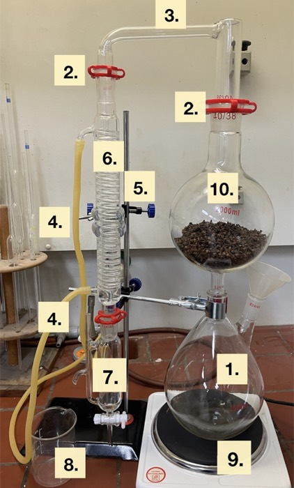

Weihnachtliche
Düfte
LERNPFAD · 07 SCHWIMMEN UND SINKEN · NATURWISSENSCHAFTEN 5/6
Berlin, Anfang Dezember. Auf dem Weihnachtsmarkt steht eine kleine Holzbude: die Duftwerkstatt von Meisterin Rosalie Zimt. Hier riecht es nach Orangen, Nelken und Tannengrün. Doch dieses Jahr sind ihre Duftfläschchen leer, und Rosalie braucht Hilfe.
Rosalie Zimt: „Ihr wollt Parfumeur:innen werden? Dann zeigt mir, dass ihr Düfte aus Pflanzen herauslocken könnt! In drei Sitzungen entwerft ihr zuerst Flakons für den 3D-Drucker, dann gewinnen wir zwei Weihnachtsdüfte: Orangenöl und Nelkenöl. Aber passt auf: Die beiden Öle benehmen sich im Wasser ganz verschieden.“
In den Duft-Sitzungen läuft vorne eine echte Wasserdampfdestillation, und am Ende füllt ihr einen Tropfen Duftöl in euren Duftkörper.
So spielt ihr
- Ihr arbeitet zu zweit an einem iPad. Wechselt euch beim Tippen ab.
- Jede der drei Sitzungen hat fünf Duftsiegel. Jedes Siegel öffnet ihr mit dem richtigen Code oder der richtigen Lösung.
- Wenn ihr nicht weiterkommt: Öffnet die Hilfen 💡 von oben nach unten. Nehmt nur so viele, wie ihr braucht.
- Ihr seid schnell? Die grünen Lorbeer-Aufgaben 🌿 sind für echte Profis. Sie sind freiwillig.
- Euer Duftjournal auf Papier füllt ihr nebenbei aus. Das blaue Zeichen 📝 sagt euch, wann.
- Das orange Zeichen 🧪 heißt: Jetzt geht ihr nach vorne zur Apparatur.
Wer forscht heute?
🧴 Sitzung 1: Flakons
Rosalie braucht Fläschchen mit genau 1 ml. Hier startet ihr!
🍊 Sitzung 2: Orangenöl
Nur mit dem Lösungswort aus Sitzung 1.
🌰 Sitzung 3: Nelkenöl
Nur mit dem Lösungswort aus Sitzung 2.
📝 Die Lösungswörter stehen in eurem Duftjournal. Ihr könnt jede Sitzung auch auf einem anderen iPad weiterspielen.
Rosalies zweiter Wunsch
Rosalie Zimt: „Düfte allein nützen mir nichts. Ich brauche auch Flakons, kleine Duftfläschchen! Man erzählt sich auf dem Weihnachtsmarkt, dass ihr mit dem 3D-Drucker umgehen könnt. Quader, Zylinder, Halbkugel, Pyramide, Kegel, Prisma … die habt ihr schon modelliert, gedruckt und gewogen.“
„Mein Wunsch: Jeder Flakon soll innen genau 1 ml fassen. Nicht mehr, nicht weniger. Ein Tropfen Duftöl, aufgefüllt mit etwas Alkohol, so verkaufe ich meine Weihnachtsdüfte.“
🧴 Auftrag
- Beantwortet die vier Fragen zu Einheiten und Hohlformen. Jede Antwort hat einen Buchstaben.
- Die vier Buchstaben der richtigen Antworten ergeben der Reihe nach den Code.
🔒 Duftsiegel 1
Tippt die vier Buchstaben eurer Antworten ein (Frage 1 bis 4).
💡 Hilfen · Duftjournal Aufgabe 1 (Impuls für Impuls öffnen, im Journal ankreuzen)
Impuls 1 · Denkanstoß · Würfel mit 1 cm
Stellt euch einen Würfel vor, der 1 cm lang, 1 cm breit und 1 cm hoch ist. Genau so viel Wasser passt in 1 ml. Wie viele Millimeter hat jede Kante?
Impuls 2 · Werkzeug · Umrechnen
1 cm = 10 mm. Ein Würfel mit 1 cm Kante ist also 10 mm · 10 mm · 10 mm groß. Das Fassungsvolumen ist der Platz innen, nicht das ganze Fläschchen. In Tinkercad macht man innen Platz, indem man eine Form als Bohrung einstellt.
Impuls 3 · Lösungsweg
1 ml = 1 cm³ · 1 cm³ = 1000 mm³ · Fassungsvolumen = Volumen des Hohlraums innen · Hohlraum = Form als Bohrung, dann gruppieren. Code: H O H L.
🌿 Lorbeer-Aufgabe ★★
Ein Tropfen Duftöl hat etwa 0,05 ml. Wie viele Tropfen passen in einen Flakon mit 1 ml?
Wählt euren Grundkörper
Rosalie Zimt: „Welche Form soll euer Flakon haben? Ein schlichter Quader, ein eleganter Zylinder oder etwas Besonderes? Je mehr Sterne, desto kniffliger die Rechnung. Aber keine Sorge: Ich begleite euch Schritt für Schritt.“
📐 Auftrag
- Tippt auf den Grundkörper, aus dem ihr euren Flakon bauen wollt. ★ einfach, ★★ mittel, ★★★ knifflig.
- Zum Aufwärmen: Berechnet das Volumen des Körpers, den ihr in Lernpfad 04 schon gedruckt habt.
💡 Hilfen · Duftjournal Aufgabe 2 (Impuls für Impuls öffnen, im Journal ankreuzen)
Impuls 1 · Denkanstoß · Welcher Körper passt zu euch?
Quader und Zylinder haben die einfachsten Formeln: Grundfläche mal Höhe. Bei Pyramide und Kegel kommt „ein Drittel davon“ dazu, beim Prisma „die Hälfte“. Die Halbkugel braucht π und eine Hochzahl. Unter dem gewählten Körper findet ihr eigene Schritt-für-Schritt-Hilfen.
Impuls 2 · Werkzeug · Die sechs Formeln
Quader: V = a · a · h · Zylinder: V = π · (d : 2)² · h · Halbkugel: V = 1/12 · π · d³ · Pyramide: V = 1/3 · a² · h · Kegel: V = 1/3 · π · (d : 2)² · h · Prisma: V = 1/2 · g · hg · hp
Impuls 3 · Lösungsweg
Übungen aus Lernpfad 04: Quader 6 cm³ · Zylinder ≈ 12,57 cm³ · Halbkugel ≈ 16,76 cm³ · Pyramide ≈ 26,67 cm³ · Kegel ≈ 27,23 cm³ · Prisma 26,25 cm³.
🌿 Lorbeer-Aufgabe ★★★
Rosalie hat einen Würfel-Flakon mit 1 cm Kantenlänge (1 ml). Sie verdoppelt alle Kanten auf 2 cm. Wie viel passt jetzt hinein?
Genau 1 ml, bitte!
Rosalie Zimt: „Jetzt rechnet ihr rückwärts: Der Hohlraum in eurem Flakon soll genau 1 ml = 1 cm³ fassen. Welche Maße braucht er?“
🔢 Auftrag
- Sucht Innenmaße in cm, mit denen euer Hohlraum genau 1 cm³ groß wird. Wählt ein Maß selbst und berechnet das andere.
- Tippt die Maße ein und prüft. Erlaubt sind 0,95 bis 1,05 ml.
- Macht im Duftjournal die Probe: Setzt eure Maße in die Formel ein.
💡 Hilfen · Duftjournal Aufgabe 3 (Impuls für Impuls öffnen, im Journal ankreuzen)
Impuls 1 · Denkanstoß · Ein Maß selbst wählen
Ihr müsst nicht alles auf einmal finden. Legt zuerst ein Maß fest, zum Beispiel 1 cm. Dann bleibt nur noch eine Zahl offen. Unter dem Rechner findet ihr Hilfen genau für euren Körper.
Impuls 2 · Werkzeug · Rückwärts rechnen
Wenn V = 1 sein soll und ihr alle anderen Zahlen kennt, teilt ihr 1 durch das Produkt der bekannten Zahlen. Beispiel Quader mit a = 1 cm: h = 1 : (1 · 1) = 1 cm. Bei der Halbkugel probiert ihr mit einer Tabelle.
Impuls 3 · Lösungsweg
Beispiele für genau 1 ml: Quader a = 1 cm, h = 1 cm · Zylinder d = 1 cm, h ≈ 1,27 cm · Halbkugel d ≈ 1,56 cm · Pyramide a = 1 cm, h = 3 cm · Kegel d = 1,5 cm, h ≈ 1,7 cm · Prisma g = 1 cm, hg = 1 cm, hp = 2 cm.
🌿 Lorbeer-Aufgabe ★★★
Rosalie möchte eine zweite Flakon-Serie. Findet auch für einen anderen Grundkörper Maße für genau 1 ml.
Der Tinkercad-Bauplan
Rosalie Zimt: „Ein Hohlraum allein ist noch kein Flakon. Er braucht eine Wand. 2 mm sind stabil genug. Und oben ein kleines Loch mit 6 mm, damit der rote Stopfen der Duftkörper passt.“
Außenmaße berechnen
Tinkercad rechnet in Millimetern. Rechnet eure Innenmaße in mm um (1 cm = 10 mm) und gebt dann jedem Maß 2 mm Wand auf jeder Seite dazu.
💡 Hilfen · Duftjournal Aufgabe 4 (Impuls für Impuls öffnen, im Journal ankreuzen)
Impuls 1 · Denkanstoß · Von cm zu mm
Schreibt eure Innenmaße aus Siegel 3 in mm: Komma eine Stelle nach rechts. 1,27 cm sind 12,7 mm.
Impuls 2 · Werkzeug · Wand dazurechnen
Die Wand ist links und rechts, unten und oben: außen = innen + 4 mm. Nur bei der Halbkugel ist es anders: Ihr Durchmesser wächst um 8 mm, weil die Kuppel sonst oben keine Wand mehr hätte.
Impuls 3 · Lösungsweg
Beispiel Quader: innen a = 10 mm, h = 10 mm → außen a = 14 mm, h = 14 mm. Beispiel Zylinder: innen d = 10 mm, h = 12,7 mm → außen d = 14 mm, h = 16,7 mm. Halbkugel: innen d = 15,6 mm → außen d = 23,6 mm.
🌿 Lorbeer-Aufgabe ★★★
Wie viel Kunststoff (PLA) braucht euer Flakon? Rechnet: Volumen außen − Volumen innen (in cm³, das kleine Loch dürft ihr weglassen).
Ab in die Druckwerkstatt
Rosalie Zimt: „Baut euren Flakon in Tinkercad nach eurem Bauplan. Bevor er gedruckt wird, prüft ihr ihn wie echte Profis. Wenn alles stimmt, bekommt ihr von eurer Lehrperson den Druck-Code.“
Qualitätskontrolle
Was muss bei einem fertigen Flakon stimmen? Tippt alle richtigen Punkte an und dann auf Prüfen.
🖨️ Zur Lehrperson
🔒 Duftsiegel 5
Druck-Code der Lehrperson (erst nach der Qualitätskontrolle):
💡 Hilfen · Duftjournal Aufgabe 5 (Impuls für Impuls öffnen, im Journal ankreuzen)
Impuls 1 · Denkanstoß · Was macht eine Bohrung?
Eine Bohrung schneidet beim Gruppieren aus der festen Form heraus. Was passiert, wenn sie zu groß ist oder nicht ganz innen liegt?
Impuls 2 · Werkzeug · Zwei Punkte sind falsch
Zwei Punkte sind falsch: Die Außenform darf keine Bohrung sein, und die Hohlform darf nicht größer sein als die Außenform.
Impuls 3 · Lösungsweg
Richtig: Hohlform als Bohrung ganz innen · Boden 2 mm (Hohlform 2 mm angehoben) · Öffnung Ø 6 mm reicht bis in den Hohlraum · alles gruppiert · Export als .stl. Den Druck-Code nennt euch die Lehrperson.
🌿 Lorbeer-Aufgabe ★★
Ihr legt euren leeren Flakon mit Stopfen in Wasser. Schwimmt er? (PLA hat ρ = 1,24 g/cm³.)
Der Flakon ist entworfen! 🧴
Rosalie Zimt: „Wunderbar! Bis zur nächsten Sitzung druckt eure Lehrperson eure Flakons. Dann brauchen wir nur noch Düfte, um sie zu füllen. Das Wort für die Duftwerkstatt ist euer Lösungswort.“
LÖSUNGSWORT SITZUNG 1
📝 Schreibt das Lösungswort jetzt in euer Duftjournal. Mit ihm öffnet ihr in der nächsten Sitzung die Orangen-Werkstatt.
…
Flakon-Designer:innen der Duftwerkstatt · Sitzung 1
| Zeit | |
| Hilfen | |
| Lorbeeren 🌿 | |
| Flakon |
📝 Zum Schluss: Euer Duftjournal
- Antwortsatz: Unser Flakon hat die Form … mit den Innenmaßen … . Sein Hohlraum fasst … ml.
- Noch Zeit? Löst die Lorbeer-Aufgaben, die ihr ausgelassen habt. Über die Siegel oben springt ihr zurück.
⚡ Schnellläufer:innen: Ein Flakon mit Stil
Verziert euren Flakon in Tinkercad: Graviert eure Initialen als Bohrung in die Außenwand (Textbaustein, höchstens 1 mm tief!) oder setzt einen Stern obendrauf. Achtung: Der Hohlraum darf dabei nicht kleiner werden, und die Wand muss dicht bleiben.
Wo steckt der Orangenduft?
Rosalie Zimt: „Willkommen zurück! Eure Flakons sind im Drucker, jetzt fehlt der Duft. Riecht mal an einer Orange. Und jetzt knickt ein Stück Schale direkt vor eurer Nase. Merkt ihr den Unterschied? Genau da sitzt mein Schatz!“
🍊 Auftrag
- Holt euch vorne ein Stück Orangenschale. Knickt es vor eurer Nase und haltet es dabei von den Augen weg. Beobachtet genau, was passiert.
- Beantwortet die vier Fragen. Jede Antwort hat einen Buchstaben.
- Die vier Buchstaben der richtigen Antworten ergeben der Reihe nach den Code.
🔒 Duftsiegel 1
Tippt die vier Buchstaben eurer Antworten ein (Frage 1 bis 4).
💡 Hilfen · Duftjournal Aufgabe 6 (Impuls für Impuls öffnen, im Journal ankreuzen)
Impuls 1 · Denkanstoß · Wo sitzt das Öl?
Knickt das Stück Orangenschale vor eurer Nase (weg von den Augen!). Haltet es gegen das Licht: Was spritzt heraus? Wo sitzt also das Duftöl? Für Frage 4: Denkt an Salatsoße. Was passiert mit Öl und Essig, wenn sie stehen bleiben?
Impuls 2 · Werkzeug · Oberfläche und Temperatur
Vergleicht ein großes Stück Schale mit vielen kleinen Stücken: Wo kommt der Dampf an mehr Stellen heran? Wasserdampf wird nie heißer als etwa 100 °C, eine Pfanne schon.
Satzanfang fürs Journal: „Kleine Stücke haben zusammen mehr …“
Impuls 3 · Lösungsweg
Das Öl sitzt in winzigen Öldrüsen der bunten Schale. Zerkleinern vergrößert die Oberfläche: Der Dampf erreicht mehr Öldrüsen. Wasserdampf ist schonend (höchstens etwa 100 °C). Öl und Wasser bilden zwei Schichten. Code: D U F T.
🌿 Lorbeer-Aufgabe ★★
Rosalie kauft für ihr Duftöl nur unbehandelte Bio-Orangen. Warum ist das für die Duftwerkstatt wichtig?
Die Duftmaschine
Rosalie Zimt: „Mit der Pfanne würde ich meinen Duft verbrennen. Ich nehme lieber Wasserdampf! Der strömt durch die Schalen, nimmt das Öl mit und wird danach wieder abgekühlt. Diese Methode heißt Wasserdampfdestillation. Kennt ihr die Teile meiner Duftmaschine?“
🔬 Auftrag
- Schaut euch das Foto der Apparatur an. Vergleicht es mit der echten Apparatur vorne im Raum.
- Wählt für jede Nummer das passende Gerät aus. Dann tippt auf Prüfen.

Wasserdampfdestillation (hier mit Nelken). Unten kocht Wasser, oben liegt das Extraktionsgut.
💡 Hilfen · Duftjournal Aufgabe 7 (Impuls für Impuls öffnen, im Journal ankreuzen)
Impuls 1 · Denkanstoß · Wo fängt alles an?
Fangt im Foto unten rechts an: Was wird heiß? Was steht darauf? Folgt dann dem Glasrohr oben nach links bis zum Hahn.
Impuls 2 · Werkzeug · Wortspeicher
Wortspeicher: Rundkolben · Heizplatte · Extraktionsgut · Destillationsbrücke · Kühler · Schläuche · Tropftrichter · Becherglas · Schliffklammern · Stativ. Im Kühler steckt eine Glasspirale, durch die Schläuche fließt kaltes Wasser.
Impuls 3 · Lösungsweg
1 Rundkolben (Wasser) · 2 Schliffklammern · 3 Destillationsbrücke · 4 Schläuche · 5 Stativ · 6 Kühler · 7 Tropftrichter · 8 Becherglas · 9 Heizplatte · 10 Extraktionsgut (Orangenschalen).
🌿 Lorbeer-Aufgabe ★★★
Am Kühler (6) fließt das kalte Wasser unten hinein und oben heraus. Warum nicht andersherum?
Wo ist mein Orangenöl?
Rosalie Zimt: „Im Tropftrichter sammeln sich Wasser und Öl. Sie mischen sich nicht, sondern bilden zwei Schichten. Aber welche Schicht ist mein kostbares Öl? Wenn ich den Hahn falsch öffne, fließt mein Duft ins Abwasser!“
Die Dichte entscheidet
ρ = 0,84 g/cm³
⚗️ Virtueller Versuch: Öl abtrennen
- Wählt mit dem Schalter, wohin der Hahn tropft: ins Becherglas (Abwasser) oder in den Duftkörper.
- Öffnet den Hahn und schließt ihn rechtzeitig wieder.
- Ziel: Fast alles Öl im Duftkörper, fast kein Wasser. Dann tippt auf Fertig.
🔒 Duftsiegel 3
Wo sammelt sich das Orangenöl im Tropftrichter? Tippt das Wort ein. (Das Schloss geht erst auf, wenn euer virtueller Versuch geklappt hat.)
💡 Hilfen · Duftjournal Aufgabe 8 (Impuls für Impuls öffnen, im Journal ankreuzen)
Impuls 1 · Denkanstoß · Vergleicht die Zahlen
Welche Zahl ist kleiner: 0,84 oder 1,00? Denkt an die schwimmende Orange aus Lernpfad 02: Was hat eine kleinere Dichte als Wasser?
Impuls 2 · Werkzeug · Der Hahn ist unten
Kleinere Dichte als Wasser → schwimmt oben. Aus dem Hahn fließt immer zuerst die untere Schicht. Was muss also zuerst ins Becherglas, bevor ihr auf den Duftkörper umschaltet?
Wortspeicher fürs Journal: schwimmt · Dichte · oben · untere · Wasser · Orangenöl
Impuls 3 · Lösungsweg
0,84 < 1,00: Orangenöl schwimmt oben. Erst das Wasser ins Becherglas ablassen, kurz vor der Grenze schließen, auf Duftkörper umschalten, dann das Öl. Zeichnung: oben schmale Schicht „Orangenöl“, darunter „Wasser“. Code: OBEN.
🌿 Lorbeer-Aufgabe ★★
Rosalie gießt vier Flüssigkeiten vorsichtig in ein hohes Glas. Tippt sie in der Reihenfolge an, in der sie sich von oben nach unten stapeln.
Wie viel Duft steckt in der Schale?
Rosalie Zimt: „Ein Kilo Orangenschalen, und am Ende habe ich nur ein Schnapsgläschen voll Öl. Deshalb ist Duftöl so wertvoll! Messt genau nach, wie viel wir heute gewonnen haben.“
Übung: Volumen an der Messpipette ablesen
In der Messpipette ist unten Wasser, darüber die gelbe Ölschicht. Das Volumen des Öls ist der Unterschied zwischen oberer und unterer Grenze der Ölschicht.
🧪 An der Apparatur
💡 Hilfen · Duftjournal Aufgabe 9 (Impuls für Impuls öffnen, im Journal ankreuzen)
Impuls 1 · Denkanstoß · Grenzen suchen
Sucht in der Messpipette die untere und die obere Grenze der gelben Ölschicht. Lest beide Zahlen ab.
Impuls 2 · Werkzeug · Striche und Rechnung
Zwischen zwei langen Strichen liegen 0,5 ml, zwischen zwei kurzen 0,1 ml. Rechnet: obere Grenze − untere Grenze. Beispiel: von 1,0 ml bis 1,3 ml sind es 0,3 ml.
Impuls 3 · Lösungsweg
Übung: Die Ölschicht reicht von 1,0 ml bis 1,4 ml, also 0,4 ml. Für das echte Öl tragt ihr die Werte der Lehrperson ein. Antwortsatz fürs Journal: „Aus … g Orangenschale wurden nur … ml Orangenöl gewonnen.“
🌿 Lorbeer-Aufgabe ★★★
Wie schwer ist euer Orangenöl? Rechnet mit der Dichte: m = ρ · V = 0,84 g/ml · euer Volumen.
Euer Duftkörper
Rosalie Zimt: „Ein einziger Tropfen reicht, und euer Duftkörper duftet tagelang nach Weihnachten. Aber Duftöle sind reine Stoffe in hoher Konzentration. Damit geht man vorsichtig um!“
Sicherheitsregeln
Welche Regeln gelten für euren Duftkörper? Tippt alle richtigen an und dann auf Prüfen.
🧪 Abfüllen
🔒 Duftsiegel 5
Code von der Duftkarte an der Apparatur (erst nach den Sicherheitsregeln):
💡 Hilfen · Duftjournal Aufgabe 10 (Impuls für Impuls öffnen, im Journal ankreuzen)
Impuls 1 · Denkanstoß · Duft und Gefahr
Riecht vorsichtig an eurem Duftkörper: Woran erinnert euch der Duft? Für die Regeln: Reines Duftöl kann die Haut reizen und brennt. Öl und Wasser mischen sich nicht.
Impuls 2 · Werkzeug · Duftwörter und falsche Regeln
Duftwörter: frisch · süß · fruchtig · spritzig · würzig · warm · weihnachtlich. Zwei Regeln im Spiel sind falsch: Der Duftkörper gehört nicht neben eine Kerze, und Wasser verdünnt das Öl nicht.
Impuls 3 · Lösungsweg
Richtig: nicht auf Haut und Augen · Stopfen drauf · nicht essen oder trinken · Hände waschen. Duft z. B. frisch, süß, fruchtig. Der Code steht auf der Duftkarte an der Apparatur; fehlt sie, fragt die Lehrperson.
🌿 Lorbeer-Aufgabe ★★
Ein Tropfen hat ungefähr 0,05 ml. Für wie viele Duftkörper (je ein Tropfen) reicht euer Orangenöl aus Siegel 4?
Der Orangenduft ist gefangen! 🍊
Rosalie Zimt: „Wunderbar! Orangenöl ist weniger dicht als Wasser (0,84 statt 1,00 g/cm³). Deshalb schwimmt es oben im Tropftrichter, und ihr konntet zuerst das Wasser ablassen. Mein Orangenöl besteht fast nur aus einem Duftstoff. Sein Name ist euer Lösungswort.“
LÖSUNGSWORT SITZUNG 2
📝 Schreibt das Lösungswort jetzt in euer Duftjournal. Mit ihm öffnet ihr in der nächsten Sitzung die Nelken-Werkstatt.
…
Lehrlinge der Duftwerkstatt · Sitzung 2
| Zeit | |
| Hilfen | |
| Lorbeeren 🌿 | |
| Orangenöl |
📝 Zum Schluss: Euer Duftjournal
- Antwortsatz: Das Orangenöl schwimmt oben auf dem Wasser, weil …
- Noch Zeit? Löst die Lorbeer-Aufgaben, die ihr ausgelassen habt. Über die Siegel oben springt ihr zurück.
⚡ Schnellläufer:innen: Vorhersage für Sitzung 3
Nächstes Mal destillieren wir Gewürznelken. Nelkenöl besteht vor allem aus Eugenol mit der Dichte 1,06 g/cm³. Was sagt ihr voraus: Wo wird sich das Nelkenöl im Tropftrichter sammeln? Schreibt eure Vorhersage mit Begründung unten ins Duftjournal.
Kleine Nägel voller Duft
Rosalie Zimt: „Willkommen zurück! Orangenduft allein ist noch kein Weihnachtsduft. Mir fehlt die Nelke. Ihr Name kommt von „Nägelchen“, schaut euch die Form an! Aber Vorsicht: Nelkenöl ist ein Dickkopf. Es macht im Wasser etwas ganz anderes als das Orangenöl.“
🌰 Auftrag
- Holt euch vorne zwei Gewürznelken. Riecht daran, reibt eine zwischen den Fingern und riecht noch einmal.
- Beantwortet die fünf Fragen. Die fünf Buchstaben der richtigen Antworten ergeben den Code.
🔒 Duftsiegel 1
Tippt die fünf Buchstaben eurer Antworten ein (Frage 1 bis 5).
💡 Hilfen · Duftjournal Aufgabe 11 (Impuls für Impuls öffnen, im Journal ankreuzen)
Impuls 1 · Denkanstoß · Was ist eine Nelke?
Seht euch eine Nelke genau an: ein Köpfchen mit vier Zacken, darin eine kleine Kugel. Woran erinnert euch das? An eine Blüte, die …
Impuls 2 · Werkzeug · Hart und ölreich
Nelken sind hart und trocken: Welches Küchenwerkzeug zerreibt Gewürze? Mehr Öl in jedem Gramm heißt: Man braucht weniger Gramm. Eugenol betäubt leicht.
Satzanfang fürs Journal: „Nelken sind getrocknete …“
Impuls 3 · Lösungsweg
Nelken sind getrocknete Blütenknospen des Gewürznelkenbaums, zerkleinert mit Gewürzmühle oder Mörser. Weniger Masse für gleich viel Öl · gegen Zahnschmerzen · zwei Schichten. Code: N E L K E.
🌿 Lorbeer-Aufgabe ★★
Der Nelken-Test der Gewürzhändler:innen: Man wirft Nelken in ein Glas Wasser. Gute, ölreiche Nelken sinken oder stehen senkrecht mit dem Köpfchen nach oben. Alte, ausgetrocknete Nelken treiben waagerecht oben. Probiert es vorne aus! Warum funktioniert der Test?
Der Weg des Dampfes
Rosalie Zimt: „Die Teile meiner Duftmaschine kennt ihr schon. Heute will ich wissen, ob ihr den Weg des Duftes erklären könnt: von der Heizplatte bis in den Tropftrichter.“
🔬 Auftrag
- Tippt die Nummern in der Reihenfolge an, in der Wärme, Wasserdampf und Duftöl durch die Apparatur wandern. Beginnt bei der Heizplatte.
- Ordnet dann jedem Ort zu, was dort passiert.
Weg des Dampfes:
Was passiert wo?
💡 Hilfen · Duftjournal Aufgabe 12 (Impuls für Impuls öffnen, im Journal ankreuzen)
Impuls 1 · Denkanstoß · Anfang und Ende
Wo kommt die Wärme her? Dort beginnt der Weg (9). Wo kommen die Tropfen an? Dort endet er (7).
Impuls 2 · Werkzeug · Dazwischen
Wasserkolben → Kolben mit Nelken → Glasbrücke → Kühler. Verdampfen: flüssig wird gasförmig (beim Erhitzen). Kondensieren: gasförmig wird wieder flüssig (beim Abkühlen).
Impuls 3 · Lösungsweg
9 → 1 → 10 → 3 → 6 → 7. In 1 verdampft das Wasser, in 10 nimmt der Dampf das Duftöl mit, in 6 kondensiert der Dampf, in 7 sammeln sich die Tropfen in zwei Schichten.
🌿 Lorbeer-Aufgabe ★★
Ein Lehrling hat vergessen, den Wasserhahn für das Kühlwasser aufzudrehen. Was passiert?
Der Dickkopf im Tropftrichter
Rosalie Zimt: „Letztes Jahr hat ein Lehrling das Nelkenöl genauso abgetrennt wie das Orangenöl. Erst Wasser weg, dann Öl in den Duftkörper … und am Ende war der Duftkörper voller Wasser und das Nelkenöl im Abfluss! Was hat er übersehen?“
Die Dichte entscheidet
ρ = 0,84 g/cm³
ρ = 1,06 g/cm³
⚗️ Virtueller Versuch: Nelkenöl abtrennen
- Überlegt vorher, welche Schicht zuerst herausläuft.
- Ziel: Fast alles Nelkenöl im Duftkörper, fast kein Wasser. Dann tippt auf Fertig.
🔒 Duftsiegel 3
Wo sammelt sich das Nelkenöl im Tropftrichter? Tippt das Wort ein. (Erst nach dem virtuellen Versuch.)
💡 Hilfen · Duftjournal Aufgabe 13 (Impuls für Impuls öffnen, im Journal ankreuzen)
Impuls 1 · Denkanstoß · Vergleicht die Zahlen
Ist 1,06 größer oder kleiner als 1,00? Erinnert euch an die Cent-Münzen aus Lernpfad 06: Was passiert mit Stoffen, die dichter sind als Wasser?
Impuls 2 · Werkzeug · Was kommt zuerst?
Größer als 1,00 → sinkt nach unten. Aus dem Hahn fließt immer zuerst die untere Schicht. Liegt das Öl unten, muss der Duftkörper sofort unter den Hahn. Zeichnet im Journal das Nelkenöl unten in die Spitze, darüber Wasser.
Impuls 3 · Lösungsweg
1,06 > 1,00: Nelkenöl liegt unten, Orangenöl oben. Schalter auf Duftkörper, Hahn auf, an der Grenze schließen. Nicht jedes Öl schwimmt! Code: UNTEN.
🌿 Lorbeer-Aufgabe ★★★
Rosalie hat einen Trick: Sie löst sehr viel Kochsalz im Wasser des Tropftrichters. Salzwasser hat eine Dichte von etwa 1,2 g/cm³ (denkt an das Tote Meer aus Lernpfad 05). Was passiert mit dem Nelkenöl?
🌿 Lorbeer-Aufgabe ★★★
Für ihren Weihnachtsduft mischt Rosalie gleich viel Orangenöl und Nelkenöl. Die beiden Öle lösen sich ineinander. Was passiert, wenn sie einen Tropfen der Mischung auf Wasser gibt?
Rechnen wie die Profis: die Ausbeute
Rosalie Zimt: „Profis wollen wissen, wie viel Prozent einer Pflanze am Ende Duftöl werden. Das nennt man Ausbeute. Dafür braucht ihr die Masse des Öls. Messen kann ich aber nur das Volumen … zum Glück kennt ihr die Dichte!“
Übung: Ablesen
Diesmal liegt das Öl unten in der Pipettenspitze, darüber Wasser. Die Striche sind feiner: zwischen zwei kurzen Strichen liegen 0,05 ml.
🧪 An der Apparatur
- Masse des Öls: mÖl = ρ · V = 1,06 g/ml · V
- Ausbeute: Masse des Öls : Masse der Nelken · 100 %
💡 Hilfen · Duftjournal Aufgabe 14 (Impuls für Impuls öffnen, im Journal ankreuzen)
Impuls 1 · Denkanstoß · Was bedeutet die Dichte?
Die Dichte 1,06 g/ml bedeutet: 1 ml Nelkenöl wiegt 1,06 g. Wie viel wiegen dann eure Milliliter? Für die Übung: Achtung, feine Striche (0,05 ml).
Impuls 2 · Werkzeug · Formeln
m = ρ · V (malnehmen). Ausbeute = Masse des Öls : Masse der Nelken · 100 %. Beispiel: 2 g Öl aus 40 g Nelken: 2 : 40 = 0,05 → 5 %.
Impuls 3 · Lösungsweg
Übung: 1,25 ml − 0,55 ml = 0,7 ml. Beispielwerte: 2,4 ml · 1,06 g/ml ≈ 2,5 g; 2,5 g : 40 g · 100 % ≈ 6,4 %. Orangenschale lieferte nur etwa 1 %.
Der Weihnachtsduft
Rosalie Zimt: „Orange und Nelke zusammen, so riecht Weihnachten! Nelkenöl ist aber noch kräftiger als Orangenöl. Ein Tropfen reicht wirklich.“
Sicherheitsregeln für Nelkenöl
Tippt alle richtigen Regeln an und dann auf Prüfen.
🧪 Abfüllen
🔒 Duftsiegel 5
Code von der Duftkarte an der Apparatur (erst nach den Sicherheitsregeln):
💡 Hilfen (Impuls für Impuls öffnen, im Journal ankreuzen)
Impuls 1 · Denkanstoß · Nelkenöl
Nelkenöl betäubt und reizt. Was die Haut und den Mund betäubt, gehört nicht auf die Haut.
Impuls 2 · Werkzeug · Welche Regeln sind falsch?
Zwei Regeln sind falsch: Nelkenöl tropft man nicht selbst gegen Zahnschmerzen auf, und Wasser verdünnt es nicht.
Impuls 3 · Lösungsweg
Richtig: nicht auf Haut, Augen und Mund · Stopfen drauf · weg von Kerzen und Heizung · Hände waschen. Der Code steht auf der Duftkarte vorne an der Apparatur.
🌿 Lorbeer-Aufgabe ★★
Zahnärzt:innen benutzen eine Paste aus Zinkoxid und Eugenol für vorläufige Zahnfüllungen. Warum gerade Eugenol?
Es duftet nach Weihnachten! 🎄
Rosalie Zimt: „Ihr habt beide Öle gewonnen und richtig abgetrennt. Orangenöl (Limonen, 0,84 g/cm³) ist weniger dicht als Wasser und schwimmt oben. Nelkenöl (Eugenol, 1,06 g/cm³) ist dichter als Wasser und sinkt nach unten. Ob ein Öl schwimmt oder sinkt, verrät allein seine Dichte. Der Hauptduftstoff der Nelke ist euer letztes Lösungswort.“
ZERTIFIKAT
Weihnachtliche Parfumeur:innen
…
haben Flakons mit genau 1 ml Fassungsvolumen entworfen, Orangenöl und Nelkenöl durch Wasserdampfdestillation gewonnen und mithilfe der Dichte vom Wasser getrennt.
| Flakon | – |
| Orangenöl (Limonen) | 0,84 g/cm³ · schwimmt |
| Nelkenöl (Eugenol) | 1,06 g/cm³ · sinkt |
| Ausbeute Nelke | |
| Hilfen | |
| Lorbeeren 🌿 |
🎁 Euren Duftkörper mit Orangen- und Nelkenduft dürft ihr mit nach Hause nehmen!
Macht ein Foto von diesem Zertifikat und zeigt es eurer Lehrperson.
📝 Zum Schluss: Euer Duftjournal
- Schlussfolgerung: Ob ein Duftöl im Tropftrichter oben oder unten landet, hängt von … ab.
- Noch Zeit? Löst die Lorbeer-Aufgaben, die ihr ausgelassen habt. Über die Siegel oben springt ihr zurück.
💡 Hilfen · Duftjournal Aufgabe 15 (Impuls für Impuls öffnen, im Journal ankreuzen)
Impuls 1 · Denkanstoß · Alles schon da
Schaut in eure Journal-Aufgaben 8, 9, 13 und 14: Dort stehen fast alle Werte für die Vergleichstabelle schon.
Impuls 2 · Werkzeug · Lösungswörter und Satzanfang
Die Hauptduftstoffe sind eure Lösungswörter. Satzanfang: „… hängt von seiner … im Vergleich zur … des Wassers ab.“
Impuls 3 · Lösungsweg
Orangenöl: Limonen · 0,84 g/cm³ · oben · zuerst Wasser · ≈ 1 %. Nelkenöl: Eugenol · 1,06 g/cm³ · unten · zuerst Öl · ≈ 6 %. Schluss: Es hängt von der Dichte im Vergleich zur Dichte des Wassers ab.
⚡ Schnellläufer:innen: Euer eigener Weihnachtsduft
Welche weiteren Pflanzen könnte man destillieren? Sucht euch zwei aus: Zimtrinde (Zimtöl ρ ≈ 1,05 g/cm³), Sternanis (Anisöl ρ ≈ 0,98 g/cm³), Tannennadeln (Fichtennadelöl ρ ≈ 0,88 g/cm³), Zitronenschale (Zitronenöl ρ ≈ 0,85 g/cm³). Sagt für jedes Öl voraus, ob es im Tropftrichter oben oder unten landet, und begründet mit der Dichte. Schreibt die Vorhersagen ins Duftjournal.
Lösung
Oben (kleiner als 1,00): Anisöl, Fichtennadelöl, Zitronenöl. Unten (größer als 1,00): Zimtöl. Anisöl liegt mit 0,98 sehr nah an Wasser, es trennt sich nur langsam.